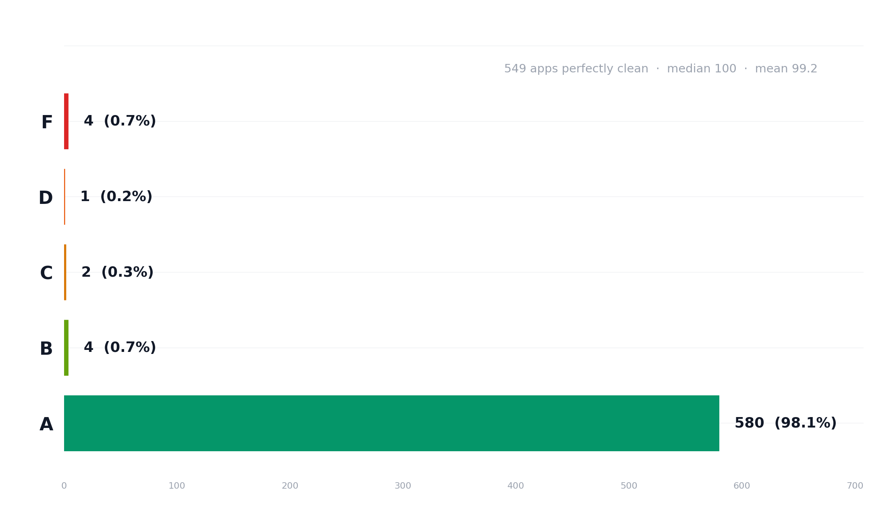

The headline is almost too good and it needs correcting
549 of 591 self-described AI-coded repos came back clean — 98.1% grade A. But 61% of these repos have no dependency manifest at all. They aren't apps. The headline is true; it's just not the full story.

The clean rate is partly an artifact of including non-apps.
Tutorials, single-script repos, and prompt collections inflate the
"clean" share. Filtering to app-shaped repos (manifest + framework
+ 30+ files) drops it to 71.4% — still the cleanest of the four
populations, but not 92.9%.